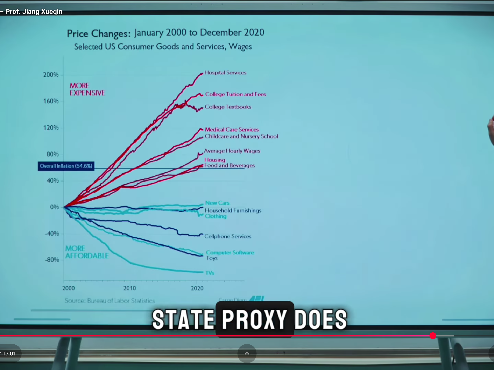

The Age of Fake Work - Prof. Jiang Xueqin / The Origins of Totalitarianism
Professor Jiang Xueqin of The Lecture Hall channel is becoming one of my favorite content contributors on YouTube. This video is about some negative impacts of bureaucracy, bureaucrats, and government on society as a whole.
Originally published as:
I think that in the USA at least, we're definitely seeing much of this develop past any reasonable point.
Some quotes:
That's how bureaucrats think. They're always thinking of ways to justify the existence but not do real work.
Eventually, society becomes so bureaucratic that the bureaucrats only think about how to make problems for ordinary citizens because life becomes easier for them.
He talks about the book The Origins of Totalitarianism by Hannah Arendt. I haven't read it, but apparently it's about Soviet Russia and the rise of Nazism in Germany before World War II.
Supposedly, Arendt describes both regimes as religious cults with three defining characteristics:
- They prefer to impose the perspectives of their cult over independent reality.
- In detachment from reality, the only motive is expansion, regardless of logic.
- As a result, they hate and defy reality; defying reality is what matters most.
According to Jiang Xueqin, these three can apply to any bureaucracy.
over time all governments all bureaucracies will tend towards totalitarianism because that's the only way they can justify their existence.
He also discusses the book Seeing Like a State by James C. Scott, apparently about how bureaucracies and governments function.
From Scott's perspective, there are four reasons why governments create more problems than they solve:
- The primary concern of government is the administrative ordering of nature and society. Bureaucracies are mechanistic, categorical, and hierarchical as opposed to organic and egalitarian. This contrasts with societies, which are natural ecosystems that the bureaucracy tries to turn into a machine. This requires the destruction of diversity, imagination, and spontaneity, which in nature are key to sustainable stability. Jiang Xueqin has an exchange with a student that describes his personal characteristics when the state only cares about his age and gender in order to determine when he can work, pay taxes, and go to war: in other words, when the state can exploit him for various forms of labor value.
- The state concerns itself with high-modernist ideology. As the state is a monopoly, democracy is a monopoly that becomes arrogant in its hubris and overconfidence.
- It tries to impose its ideology on everyone and becomes authoritarian, oblivious to feedback or debate.
- This results in a weak civil society.
Jiang Xueqin references the author's example of German forest management resulting in a limited, fragile, and unstable monoculture, and then discusses the American economy.
what's natural is just for people to live on small farms and share stuff with other people to trade with with each other. The problem with this is the state cannot tax you. So what the state does is it brings you to cities, makes you work in a factory so it can tax you. The point of giving a wage is so it can tax you
before it was very common for people to share property together. Now there's it's all owned and control by the state. Uh resources are the same thing. Before people just use resource according to their needs but now the state wants to centralize these resources. Okay, so it can tax and exploit people properly.
So what are the consequences of the over bureaucratization of society? Well, what's happening in America is that while consumer goods like cars, clothing, and cell phones are going down, what's going up are hospital services, schooling, [and] housing. Why? Because these are monopolies controlled by bureaucrats, right? So what's happening is with the over bureaucratization of society, it's almost impossible for middle class people, or people to have a good life.
After 13:25, there's an interesting graphic about what things are becoming more or less affordable in the USA.
Another chart around 14:45 compares the value of stocks to that of gold over time.
This shows something like nominal value of stocks increasing while their actual value decreases.
first of all only 10% of people in United States control most of the stocks over 90% of the stocks.
if you use gold to buy stocks, guess what? The price of stocks have gone down.
we are living in a lie. All this wealth generation, it's all a lie. It's not real. We just think it's real. We We're living in a fairy land created by bureaucrats to fool us to believe that we are prosperous.
Then he starts talking about how people no longer work in these bureaucratic systems.
So in America, this is called quiet quitting. In China, it's called tang ping (lay flat) or bai lan (let it rot).
Because it's pointless to work in a bureaucracy, right? Leaders don't care. The organization doesn't need you. You are alienated. You are told what to do and you cannot negotiate. You cannot rise from the bureaucracy. You're being asked to work too too much. You feel as though you're just a machine. Okay? And so you're and so the way you rebel is lying flat. or quite quitting. Okay. So your over bureaucratic society means that people now have become more lazy, more complacent, more more indifferent. And what this also means is that democracy is declining because people's voice people people's power is declining. Okay. So you can see that people feel as though democracy is in the decline. In fact, experts estimate that democracy, the capacity for people to participate in politics, the capacity for people to influence politics has declined rapidly these past 10 years.
Comments
Feel free to comment here:
Full transcript by:
00:00:02 Okay, that's the logic of bureaucrats. How do I justify my existence by doing as little work as possible? Okay, so this sounds strange, but let me tell you a story. This is a true story. I'm in Toronto with my two boys and I let them run around the park, okay? And we've been doing this for two months, so I trust them. One of my boys, he's four years old. He runs too far and I lose track of him. Okay. A stranger finds him and starts talking to him. But my boy doesn't speak any English. So people now
00:00:42 surround my boy like where where's where your parents? And he is scared because he doesn't speak any English. So he faints. Okay, that that's what he does. He faints to protect himself. So they call the police. They call the par the paramedics. They come and they make sure he's all right. Okay. Now I find him. Okay. And now the police interview me. They interrogate me and I explain to him what happened. And at this point they just let us go home, right? But they insist on taking us to the hospital. I'm
00:01:13 like, if we go to a hospital, we could be stuck there for like 12 hours. We be we could be in lie. And like the paramedics, the mat has already told us there's something wrong with him. Okay. Okay, it's not heat stroke. He just fainted, but he's fine. His vital signs are fine. But the police kept on insisting. Meanwhile, there's a fight going on at the park. Okay? And I'm thinking to myself, why are you guys bothering me and not going to arrest those guys who are fighting somewhere
00:01:43 else? And the answer is because it's easier to deal with me than to go arrest those guys. Okay? That's how bureaucrats think. They're always thinking of ways to justify the existence but not do real work. Okay? And that's the message of the trial. Eventually, society becomes so bureaucratic that the bureaucrats only think about how to make problems for ordinary citizens because life becomes easier for them. Okay, does that make sense? All right, let's move on to the origins of
00:02:21 totteritism by Hannah Rant. Henry Rant is the 20th century's one of the 20th century's most uh powerful intellectuals and she's writing about how Nazism came to dominate Germany. Now communism came to dominate Soviet Russia and how these two regimes led to the deaths of tens of millions of people. how they started World War II, how they cured the Holocaust, how they create the famine. Okay? And in her book, she she says that these two regimes are religious cults. They're evil cults and they have three
00:03:00 defining characteristics. Okay. The first is that they're removed from reality. They don't care about reality. They have a religion. They have a faith. They have a mindset. and they want to impose their faith on reality. Okay? They don't care about reality. They're removed from reality. That's the first thing. Okay? Second thing is that when you're removed from reality, your only logic is movement expansion. Okay? You only know if you're right if you're growing. Okay? So, if the Nazis,
00:03:32 their faith, their religion would lead to the destruction of Germany, but their membership was increasing. So, they were right. They were winning these wars against European countries. Therefore, they're right. Okay. They cannot use logic to explain their actions. So, they use movement to exp to justify their actions. Okay? That's number two. One and two means number three, which is the Nazis and the Soviets hated reality. They defied reality. They fought against reality. So even though the Nazis were
00:04:06 losing the war, even though it's clear they cannot defeat the Soviet Russia, they doubled down because in their religion movement is what matters. Defying reality is what matters. That's what led to the destruction of Germany. Okay. All right. So, and she explains that tot regimes have these three characteristics. They're removed from reality. All they care about is expansionism. and they want to defy reality as their true test of faith. What she does not say in the book is that these three can can apply to all
00:04:44 bureaucracies. All governments meaning that over time all governments all bureaucracies will tend towards totalitarianism because they have that's the only way they can justify their existence. Okay, does that make sense? All right, so let's talk let's talk about this concretely. Okay, what do I mean by this? So this is a book by James Scott. It's an excellent book, by the way, uh called Seeing Like a State. And he's trying to explain to us how brock bureaucracies work, how governments
00:05:19 function. And for him, governments actually create more problems than they solve. Why? Well, he lists four reasons. The first is that he all they care about is the administrative ordering of nature and society. So, so another way of saying this is a bureaucracy is a machine. It's a hierarchy. It's static. It's mechanical. But society is like a forest. It's diverse. It's an ecosystem. It's organic. For a state to exist, it must turn the forest into a machine like itself. So it
00:06:02 destroys diversity. It destroys spontane spontaneity. It destroys imagination. Okay. All right. So let let's use an example of this. All right. So my question to you is like who are you? Can can you can you tell us who who are you? Like like who are you as a person? Tell us who you are as a person. >> Yeah. Yeah. just just use one or two minutes to to to introduce yourself. Who are you as a person? >> Hi, my name is Banker and I I grew up in Beijing. Uh, and I came to Moonshot this
00:06:38 school in 2024 last year. And uh, >> okay, wrong wrong. Okay, that's that's not the correct answer. The right answer is you're a teenage boy. >> Oh, >> okay. That's the correct answer. All right. You believe that you are an individual with individual aspirations, ambitions, with a past, with a history. The state doesn't care. The state needs to classify you in a way that can that I can use you. Okay? You're a teenage boy, which means like two years time, you can
00:07:08 be employed in a factory or I can send you to war. Okay? That's all I care about. Okay? I don't care about your name. I don't care about who you are. I don't care who your parents are. I don't care about your past. I don't care what you like. All I care about is the fact that you are a teenage boy. and therefore I can I can exploit you for labor. Okay, that's how states think. Okay, so the democratization of society. Second is the idea of high marers ideology. So because the state is a
00:07:35 monopoly, democracy is a monopoly. It becomes arrogant. It has hubris. It's overconfident and it wants to impose its ideology on everyone else. It believes that through its own planning it can achieve paradise. Okay. Um so it becomes authoritarian meaning it refuses to listen to criticism to feedback to questions. It does it is not open to debate. It in it imposes its will on people. Okay. Which creates a weak civil society. And if if as an organization you're not getting feedback, you're not
00:08:12 allowing for openness, then you will wither and die. Okay? And that's why states, governments will always fail in the end. Okay. So he uses two examples. The first example is what happened in the late uh 19th century Germany. So in Germany there's there's lots of forests and the state is thinking of ways how can we how can we best monetize the resource of the forest? Well, there are certain trees that you can cut down for lumber, right? The problem is that in a forest, most space is occupied by
00:08:54 useless shrubs or greenery or trees. Okay? So, their idea is, you know what, here's a simple solution. We'll burn on the forest and just plant trees that we can harvest for lumber, right? Brilliant. That's a brilliant use of space. It's more efficient. The problem though is that when you do that, the trees are now are susceptible to disease to weather changes. A forest is resilient because it's diverse. Okay, so that's what this what Scott Scott says. Monocultures are as a rule
00:09:35 more fragile and hence more vulnerable to the stress of disease and weather than poly cultures are. Any unmanaged forest may experience stress from storms, disease, drought, fragile soil or severe cold. A diverse complex forest, however, with its many species of trees. Its full complement of birds, insects, and mammals is far more resilient, far more able to withstand recover from such injuries than pure stands. So nature has diversity because it allows for resilience. Okay, some part of the forest can die,
00:10:10 but the rest of the forest will recover from anything, whether it's disease or drought or weather. Okay, and we humans are the same way. If you let humans do whatever they want, we are resilient. So, some communities might die off, but other communities will adapt. The problem with state, with government is that it refuses, it sees diversity as an enemy. Okay, so if there's a natural disaster, it's very likely that a lot more people die off than otherwise. Okay, another example is force communism in
00:10:51 Tanzania. Okay, so it's a top- down system and their idea is okay, these farmers, they have their little small farms and they grow their crops, but that's not efficient. What if we just got all the farmers together and had coffee and they all you know had coffee uh or wheat or whatever and then we can sell this to other countries. Okay. And of course you can imagine that this will lead to starvation because it's the same principle as the forest. If there's a weather crisis or if there's a disease
00:11:26 then all your crops die off and then your people die off. Okay. What these planners carried in their mind's eye was certain aesthetic. What one might call a visual codification of modern rural production and communicate community life. Okay. So the problem with bureaucrats is they have no imagination. Everything to them has to be mapped out. They like things that can be mapped out that can that can be a blueprint. Okay? They like to brag about these things because because that's how they see the world.
00:11:57 But real world nature requires diversity. It requires organic. Okay. All right. So he gives examples of how the state transform society. So before what would happen is that people would just come together and they will organize the communities according to their needs. Okay? It's a bottomup process. But the state wants to create permanent cities where people are just in one place all the time, right? That's why you have cities. Um before what's natural is just for people to live on small farms and share stuff with other
00:12:42 people to trade with with each other. The problem with this is the state cannot tax you. So what the state does is it brings you to cities, makes you work in a factory so it can tax you. Okay. The point of giving a wage is so it can tax you to exploit you. Um property um before it was very common for people to share property together. Okay. Now there's it's all owned and control by the state. Uh resources are the same thing. Before people just use resource according to their needs but now the state wants to
00:13:20 centralize these resources. Okay, so it can tax and exploit people properly. Okay, so that's what a state broxy does. So what are the consequences of the over bureaucratization of society? Well, what's happening in America is that while consumer goods like cars, clothing, and cell phones are going down, what's going up are hospital services, schooling, okay, housing. Why? Because these are monopolies controlled by bureaucrats, right? So what's happening is with the over bureaucratization of society, it's
00:13:55 almost impossible for middle class people, or people to have a good life. Now, okay, here's another really interesting chart. The black shows you the growth in the stock market. Okay, and you think you think, wow, this is a good thing. Okay. The problem is first of all only 10% of people in United States control most of the stocks over 90% of the stocks. The other issue is this. The other issue is if you look at prices, yeah, it's gone up. But if you just turn, but if you look at stocks
00:14:35 as a units of gold, if you use gold to buy stocks, guess what? The price of stocks have gone down. That's a blue. Okay? If you use money to buy stocks, it goes up. But if you use gold to buy stocks, it goes down. What this is telling us, okay, very simple, is we are living in a lie. All this wealth generation, it's all a lie. It's not real. We just think it's real. We We're living in a fairy land created by bureaucrats to fool us to believe that we are prosperous. Okay? Does that make
00:15:07 sense? The amount of gold that you can buy with stocks has gone down. Okay. And so the blue is the gold, the black is money. The money isn't is worthless. Okay. All right. Another problem that bureaucratizing has created is people don't want to work anymore. So in America, this is called quite quitting. In China, it's called tonging or banan. Okay? Lying flat, let it rot. People don't want to work anymore. Why? Because it's pointless to work in a bureaucracy, right? Leaders don't care. The organiz
00:15:49 doesn't need you. You are alienated. You are told what to do and you cannot negotiate. You cannot rise from the bureaucracy. You're you're being asked to work too too much. You feel as though you're just a machine. Okay? And so you're and so the way you rebel is lying flat. or quite quitting. Okay. So your over bureaucratic society means that people now have become more lazy, more complacent, more more indifferent. And what this also means is that democracy is declining because people's
00:16:29 voice people people's power is declining. Okay. So you can see that people feel as though democracy is in the decline. In fact, experts um estimate that democracy, the capacity for people to participate in politics, the capacity for people to influence politics has declined rapidly these past 10 years. Okay? So we are living in a world that is becoming more and more bureaucratic and it's killing